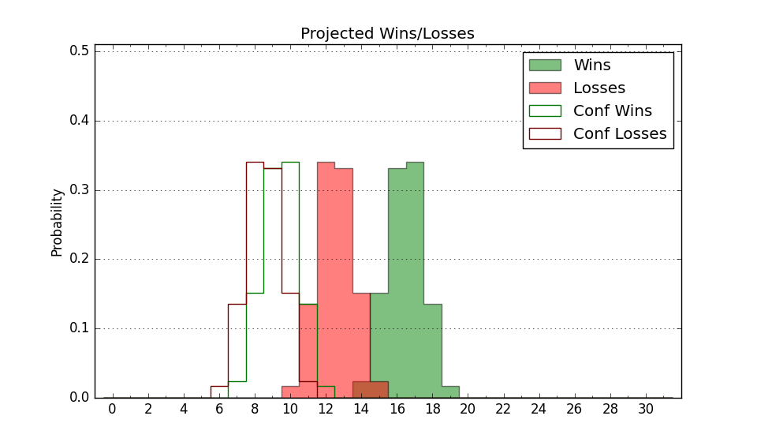

| Home | Game Probabilities | Conferences | Preseason Predictions | Odds Charts | NCAA Tournament |
| City: | St. Paul-Minneapolis, Minnesota | |
| Conference: | Summit (4th)
| |
| Record: | 7-6 (Conf) 14-10 (Overall) | |
| Ratings: | Comp.: -5.0 (224th) Net: -4.8 (223rd) Off: 106.2 (109th) Def: 111.0 (329th) SoR: 0.0 (157th) |
| Remaining | ||||||
|---|---|---|---|---|---|---|
| Date | Opponent | Win Prob | Pred. | |||
| 2/9 | Oral Roberts (41) | 17.9% | L 73-84 | |||
| 2/11 | UMKC (258) | 71.1% | W 69-63 | |||
| 2/18 | Western Illinois (239) | 68.5% | W 76-70 | |||
| 2/23 | @ North Dakota St. (230) | 36.5% | L 72-76 | |||
| 2/25 | @ North Dakota (300) | 51.6% | W 73-72 | |||
| Previous | Game Score | |||||
| Date | Opponent | Win Prob | Result | Off | Def | Net |
| 11/7 | @Creighton (13) | 3.2% | L 60-72 | -2.2 | 14.4 | 12.1 |
| 11/11 | Chicago St. (265) | 72.1% | W 83-61 | 12.7 | 13.9 | 26.6 |
| 11/13 | St. Francis NY (352) | 89.6% | W 84-48 | 12.1 | 20.5 | 32.6 |
| 11/17 | @Montana (183) | 26.3% | L 59-78 | -20.3 | -2.9 | -23.1 |
| 11/18 | (N) Troy (163) | 36.8% | W 78-76 | 11.8 | -4.3 | 7.5 |
| 11/19 | (N) Merrimack (336) | 76.1% | W 72-61 | 13.8 | -10.8 | 3.0 |
| 11/23 | @Milwaukee (210) | 32.0% | W 76-72 | 0.8 | 8.8 | 9.6 |
| 11/26 | @Utah (47) | 6.5% | L 66-95 | 9.1 | -24.6 | -15.4 |
| 12/8 | @Montana St. (102) | 14.2% | L 65-82 | -4.8 | -1.9 | -6.6 |
| 12/10 | @Idaho St. (215) | 33.8% | W 76-70 | 10.2 | -1.6 | 8.6 |
| 12/13 | Green Bay (361) | 94.6% | W 82-61 | 1.6 | 0.7 | 2.3 |
| 12/19 | North Dakota (300) | 78.4% | W 75-62 | 10.0 | -5.0 | 5.0 |
| 12/21 | North Dakota St. (230) | 66.1% | W 78-68 | 6.1 | -0.1 | 5.9 |
| 12/29 | @South Dakota (323) | 57.9% | L 84-92 | 2.1 | -19.2 | -17.1 |
| 12/31 | @South Dakota St. (169) | 24.7% | L 64-71 | -10.0 | 10.8 | 0.8 |
| 1/5 | Denver (273) | 73.6% | W 81-71 | 6.7 | -5.2 | 1.5 |
| 1/7 | Nebraska Omaha (295) | 77.1% | W 80-68 | -3.4 | 9.5 | 6.1 |
| 1/12 | @UMKC (258) | 41.9% | L 60-81 | -11.8 | -20.6 | -32.4 |
| 1/14 | @Oral Roberts (41) | 6.0% | L 69-81 | 2.5 | 1.4 | 3.9 |
| 1/21 | @Western Illinois (239) | 39.0% | L 56-60 | -16.7 | 6.4 | -10.3 |
| 1/26 | South Dakota St. (169) | 52.8% | W 60-54 | -14.7 | 21.4 | 6.8 |
| 1/28 | South Dakota (323) | 82.4% | L 67-81 | -20.2 | -12.9 | -33.0 |
| 2/2 | @Nebraska Omaha (295) | 49.7% | W 89-83 | 14.3 | -9.9 | 4.4 |
| 2/4 | @Denver (273) | 45.0% | W 68-57 | -4.9 | 21.7 | 16.8 |
| Stats & Trends | |||||
|---|---|---|---|---|---|
| Current | Day | Week | Month | Season | |
| Composite | -5.0 | +0.0 | +0.9 | -1.0 | +13.1 |
| Comp Rank | 224 | -- | +8 | -7 | +131 |
| Net Efficiency | -4.8 | +0.0 | +0.7 | -2.6 | -- |
| Net Rank | 223 | -- | +7 | -24 | -- |
| Off Efficiency | 106.2 | -0.0 | +0.3 | -3.8 | -- |
| Off Rank | 109 | -- | +3 | -67 | -- |
| Def Efficiency | 111.0 | +0.1 | +0.4 | +1.2 | -- |
| Def Rank | 329 | +2 | +3 | +11 | -- |
| SoS Rank | 277 | +1 | +6 | +23 | -- |
| Exp. Wins | 16.5 | +0.0 | +1.2 | -0.2 | +7.4 |
| Exp. Conf Wins | 9.5 | +0.0 | +1.2 | -0.2 | +3.7 |
| Conf Champ Prob | 0.0 | -- | -- | -0.9 | -0.3 |

| Advanced Stats | ||
|---|---|---|
| Stat | Value | Rank |
| Off Eff FG % | 0.518 | 129 |
| Off Ast Ratio | 0.144 | 152 |
| Off ORB% | 0.208 | 326 |
| Off TO Rate | 0.150 | 122 |
| Off FT Ratio | 0.352 | 82 |
| Def Eff FG % | 0.536 | 294 |
| Def Ast Ratio | 0.146 | 207 |
| Def ORB% | 0.321 | 320 |
| Def TO Rate | 0.143 | 281 |
| Def FT Ratio | 0.296 | 136 |